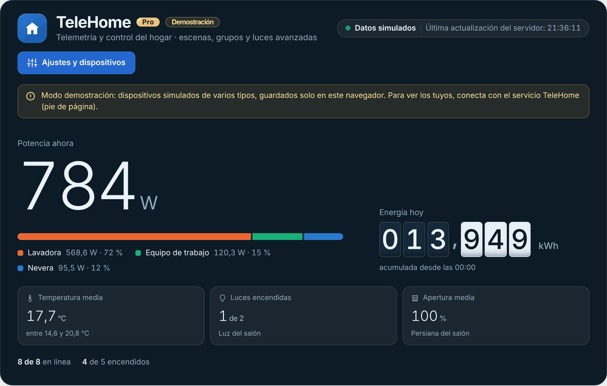
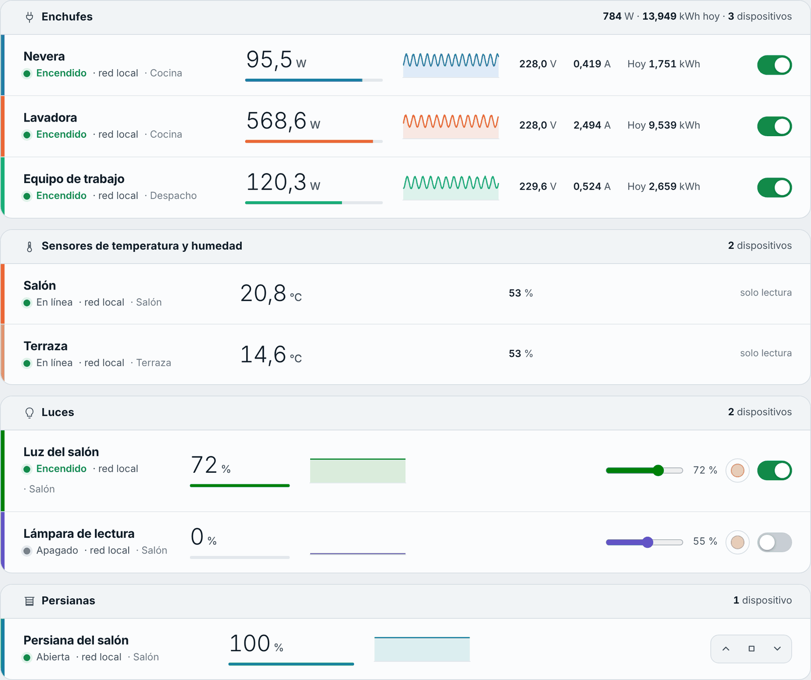
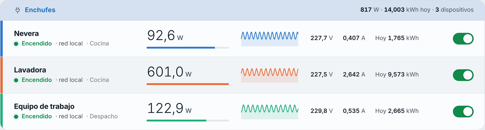
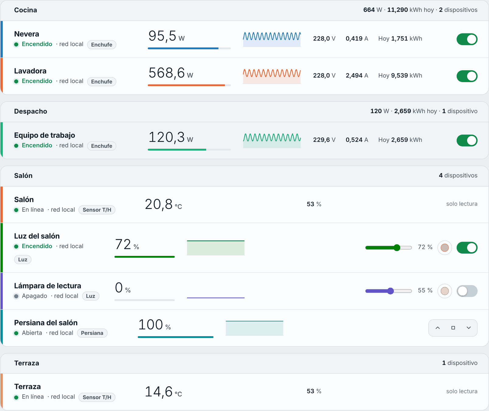
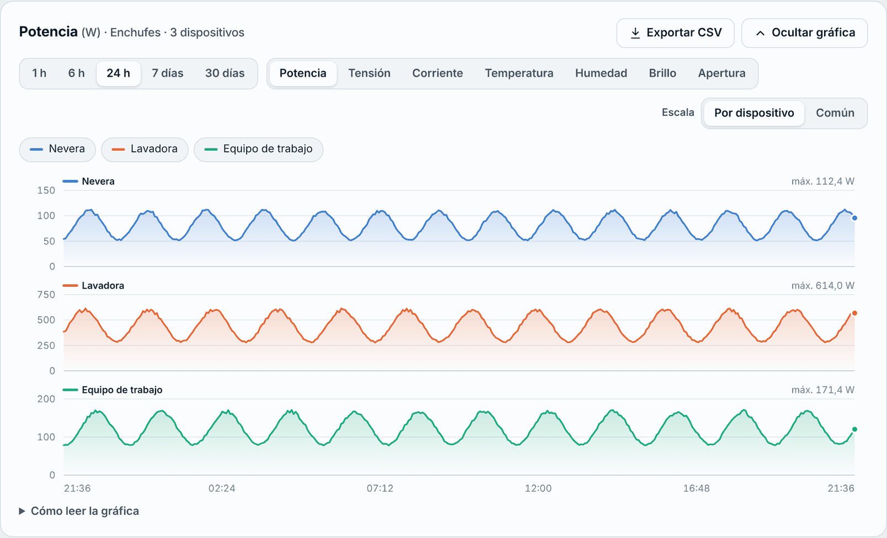
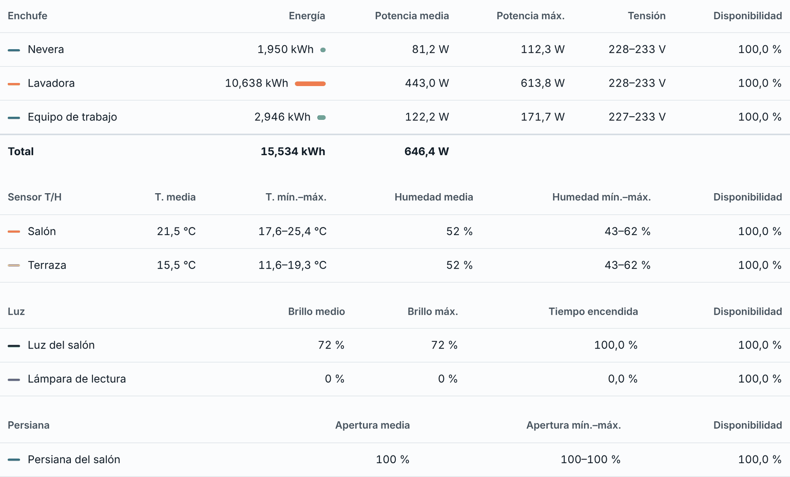
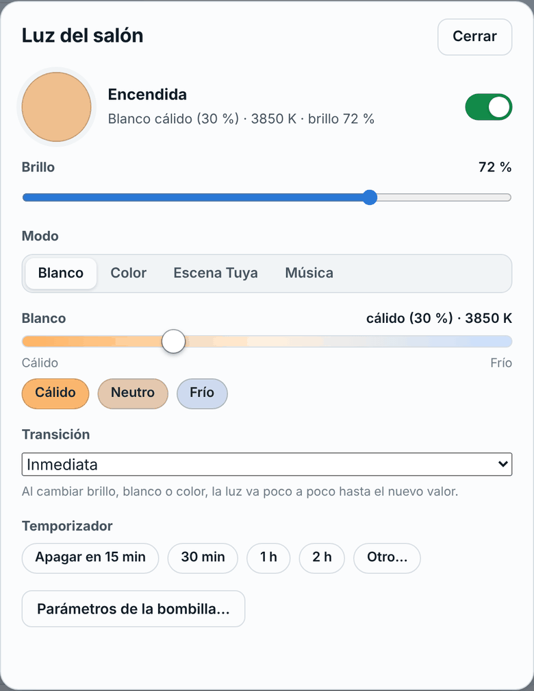
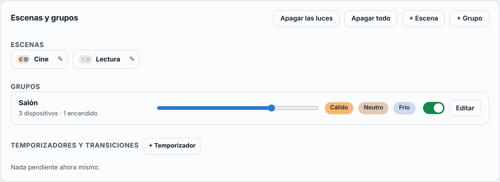
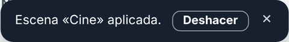
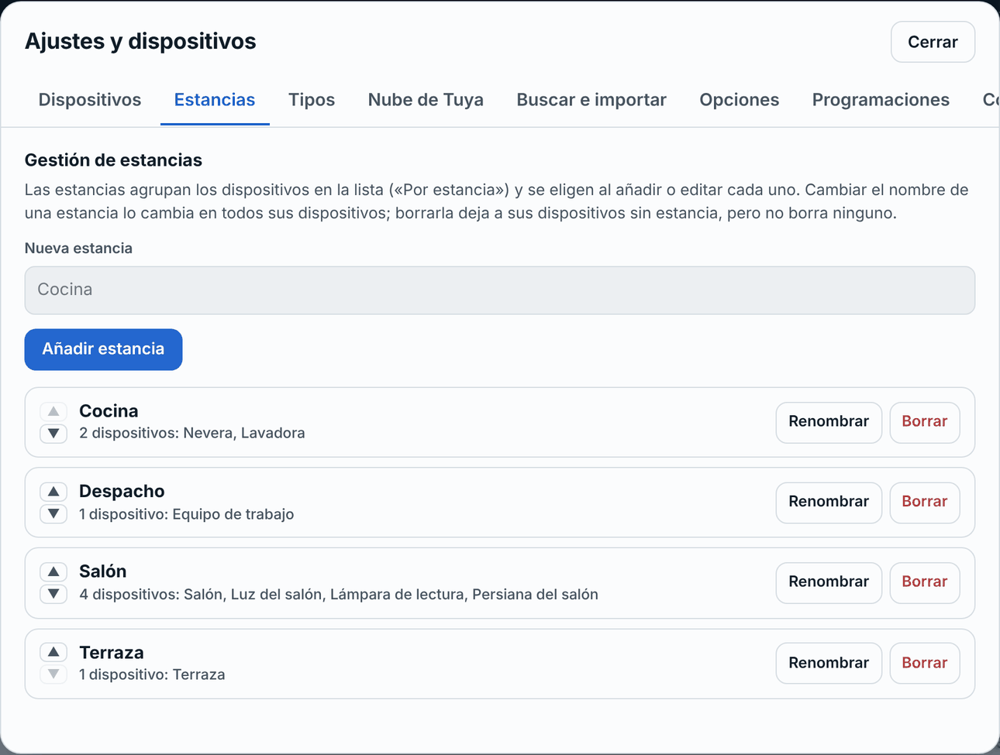

Guía de uso para quien quiere ver y controlar sus enchufes, sensores, luces y persianas desde el navegador, sin entrar en cómo está construida la app por dentro.
TeleHome Pro es una página web que muestra y controla los dispositivos conectados de tu casa: enchufes inteligentes, sensores de temperatura y humedad, luces regulables y persianas. Es la versión avanzada de TeleHome: además de ver y manejar lo de siempre, añade escenas, grupos de luces, transiciones (que una luz cambie poco a poco) y temporizadores.
No hace falta instalar nada en tu ordenador o móvil: todo ocurre dentro de esta misma página, que habla con un pequeño programa (el «servicio TeleHome») que es quien realmente se conecta a tus dispositivos.
Al abrir TeleHome Pro ocurre una de estas dos cosas:
Si entras con una contraseña de «usuario de confianza» podrás ver y manejar los dispositivos, pero no cambiar los ajustes. Si entras como administrador podrás además añadir dispositivos, crear escenas y grupos, y tocar cualquier opción. Sin contraseña, el acceso suele ser de solo lectura (ver el apartado 11).
Lo primero que ves es un resumen del estado general: la magnitud más relevante en grande (potencia total, temperatura media…), la energía acumulada hoy, un desglose de qué dispositivo pesa más, y unas fichas con el resto de magnitudes.

Debajo del resumen está la lista de dispositivos, uno por fila. Cada fila trae: el nombre, el estado (encendido, apagado, sin conexión…), el valor principal, un pequeño gráfico de los últimos minutos, algunos valores secundarios y, a la derecha, su control.

| Tipo | Qué puedes hacer |
|---|---|
| Enchufe | Encender y apagar; se ve su potencia, tensión, corriente y la energía consumida hoy. |
| Sensor de temperatura/humedad | Solo lectura: temperatura y humedad del momento. |
| Luz | Encender, apagar, subir o bajar el brillo, y — en las que lo admiten — elegir blanco o color (apartado 7). |
| Persiana | Subir, parar o bajar, y se ve su apertura actual en porcentaje. |
Encima de la lista hay tres botones — Por tipo Por estancia Sin agrupar — que deciden cómo se organiza. Con «Por tipo» o «Por estancia» aparece una cabecera gris por cada grupo, con su nombre y un resumen (potencia total, cuántos están en línea…).
Tanto la gráfica como el resumen, más abajo en la página, pueden ceñirse a una parte de tus dispositivos en vez de mostrarlos todos a la vez:


Debajo de la lista hay una gráfica con el histórico de una magnitud (potencia, temperatura, brillo…), y más abajo una tabla de resumen con medias, máximos y energía por dispositivo.


El botón Exportar CSV, junto al título de la gráfica, descarga las lecturas (apartado 12). Pasando el ratón o el dedo por la gráfica se ve el valor exacto de cada momento; con el teclado, las flechas izquierda y derecha.
En las luces que admiten color o blanco regulable aparece un botón redondo junto al interruptor: ábrelo para ver su panel completo.

| Control | Qué hace |
|---|---|
| Brillo | De 0 a 100 %, con el deslizador. |
| Blanco | Más cálido o más frío; los botones «Cálido», «Neutro» y «Frío» van directos a un punto habitual. |
| Color | Elige tono y saturación, con colores rápidos o «Otro color» para cualquier tono. |
| Escena Tuya / Música | Deja que la bombilla siga el efecto que ya tuviera guardado en la app de Tuya; TeleHome no cambia sus colores en ese modo. |
| Transición | De inmediata a 15 minutos: el brillo, el blanco o el color van cambiando poco a poco hasta el valor nuevo, en vez de saltar de golpe. |
| Temporizador | «Apagar en 15/30/60/120 min» con un toque, u «Otro…» para elegir tiempo, dispositivo (también enchufes) y si enciende o apaga. |
Debajo de la lista de dispositivos, el panel «Escenas y grupos» reúne todo lo que combina varios aparatos a la vez.

Una escena deja varios dispositivos tal como tú quieras (encendidos o apagados, con un brillo y un color o blanco concretos) con un solo toque. Se crean desde cero, eligiendo dispositivo a dispositivo, o con «Capturar el estado actual»: dejas las luces como te gustan y la escena guarda justo eso. La escena que coincide con el estado actual de tus luces aparece marcada, para saber de un vistazo cuál está puesta.
Un grupo junta varias luces para encenderlas, apagarlas o cambiarles el brillo y el blanco todas a la vez, con un único interruptor y deslizador. Si algún miembro no admite la orden (un enchufe no tiene brillo), esa orden simplemente no le llega a él.
Aquí se ven los temporizadores pendientes («se apagará a las…») y las transiciones que están en marcha («subiendo poco a poco hasta las…»), con un botón para cancelarlos. El botón «+ Temporizador» abre un diálogo para ponerle uno a cualquier dispositivo, también a un enchufe.
Arriba del todo, «Apagar las luces» y «Apagar todo» apagan en bloque con un solo toque — y, como se explica a continuación, se pueden deshacer.
Cada acción deja un aviso abajo confirmando qué ha pasado. Cuando aplicas una escena, mandas una orden a un grupo, o apagas en bloque, el aviso trae además un botón Deshacer durante unos segundos.

Encender o apagar un único dispositivo con su propio interruptor, en cambio, no ofrece deshacer: basta con volver a pulsarlo.
Una estancia es simplemente el sitio de la casa donde está un dispositivo («Cocina», «Salón»…), y sirve para agruparlos en la lista (apartado 5). Al añadir o editar un dispositivo, su estancia se elige en un desplegable con las que ya existen, o se escribe una nueva ahí mismo.
Si eres administrador, la pestaña Ajustes → Estancias deja definir, renombrar, borrar y ordenar las estancias de la casa:

El botón «Ajustes y dispositivos» de la cabecera abre una hoja con varias pestañas: Dispositivos, Estancias, Tipos (qué mide cada tipo), Nube de Tuya, Buscar e importar, Opciones, Programaciones y Compartir. Si entras sin ser administrador, la hoja se abre igual pero los campos están bloqueados, con un aviso explicándolo.
| Nivel | Puede |
|---|---|
| Sin entrar (solo lectura) | Ver los datos, pero no tocar nada. |
| Usuario de confianza | Ver y manejar los dispositivos (encender, regular, aplicar escenas…), pero no cambiar ajustes. |
| Administrador | Todo lo anterior, más añadir y configurar dispositivos, estancias, escenas, grupos y contraseñas. |
El botón «Exportar CSV», junto al título de la gráfica, descarga las lecturas del dispositivo o grupo que tengas seleccionado (apartado 5) en un archivo que se abre con Excel, Numbers o Google Sheets. Si lo que tienes a la vista son varios dispositivos sin filtrar, el botón abre antes un menú para elegir de cuál descargarlas.
Sin un servicio real que encontrar, TeleHome Pro arranca con ocho dispositivos de ejemplo (enchufes, sensores, luces y una persiana), dos escenas y un grupo ya creados, para que se pueda probar todo sin arriesgar nada real. Los cambios que hagas se guardan en este navegador; el botón «Reiniciar demo» del pie de la página los borra y vuelve a empezar.
¿Por qué un dispositivo aparece «Sin conexión»?
El servicio no ha podido hablar con él en la última consulta. Si es un enchufe o una bombilla en modo local,
comprueba que no haya otra app del móvil conectada a la vez: estos dispositivos solo admiten una conexión.
¿Por qué no veo el botón de color en una luz?
Esa bombilla concreta no admite color (o no se ha activado para ella); sigue pudiendo regular brillo y, si lo
admite, blanco cálido/frío.
¿Puedo deshacer el apagado de un solo enchufe?
No hace falta botón de deshacer ahí: simplemente vuelve a encenderlo con su interruptor.
Cambié de agrupación y perdí el grupo que tenía seleccionado, ¿es normal?
Sí: el grupo seleccionado pertenece a la agrupación en la que lo elegiste («Enchufes» solo existe agrupando
«Por tipo», por ejemplo), así que al cambiarla se vuelve a ver todo.
¿Quién puede crear escenas y grupos?
Verlas y aplicarlas, cualquier usuario de confianza; crearlas, editarlas o borrarlas, solo un administrador.